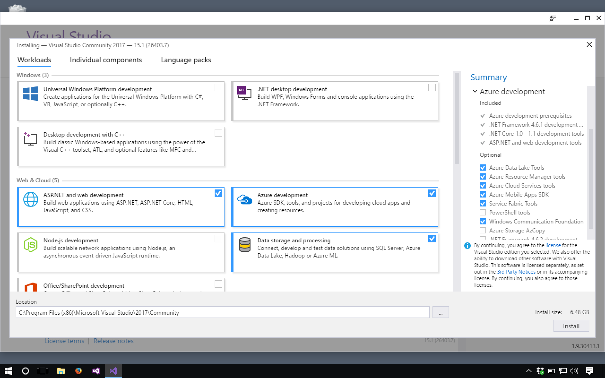
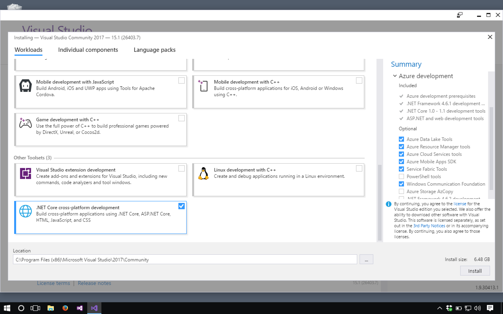
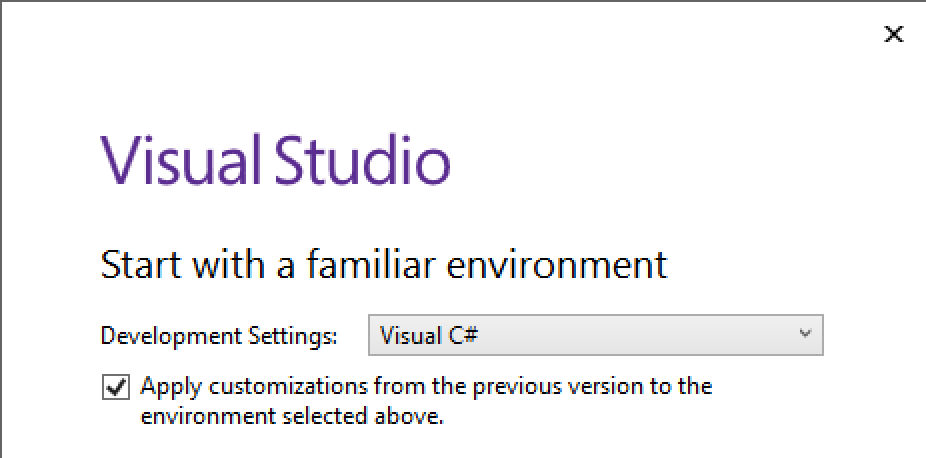

Initial Setup
The steps here will walk you through setting up a repository that you'll use to study example code, work on studios, and complete your first assignment of this unit.
Visual Studio
Visual Studio is the Integrated Development Environment (IDE) used to develop C# and .NET applications.
Windows Users
Visit the Microsoft Free Developer Apps page and download the Visual Studio 2017 Community installer. Allow at least an hour for the installation process.
Run the installer, and select the following packages from the Workloads pane:
- ASP.NET and web development
- Azure development
- Data storage and processing
- .NET core cross-platform development
Your selections will look like these screens:


When the install finishes running, select Launch and then close the installer window.
When prompted, create a Microsoft Developer account and use it to sign in to Visual Studio.
The launcher window will prompt you with some choices via a window similar to what you see below. Select the displayed options. (If you don't see the box about applying customizations, don't worry about it, just proceed.)
Connect to GitHub for Windows Users
Visit this page to download and install the GitHub Extension for Visual Studio.
Mac and Linux Users
If you followed the instructions in Running Windows on Mac or Linux then you already have everything you need.
GitHub Project Setup
Visit the LaunchCodeEducation/csharp-exercises repository page and fork the repository into your own GitHub account by selecting Fork from the top right of the page.
After forking, open Visual Studio. From within Visual Studio, choose the Team Explorer tab near the bottom of the Solution Explorer pane. If you don't see this tab, you can open it via the application menu: View > Team Explorer. The first time you do this, you will need to click Connect... and then sign in to GitHub.
Select Clone from the GitHub section of the Team Explorer and select your csharp-exercises copy from the modal window. Be sure to change the Path field to the location you would like the project to live, ideally inside of a folder you've been using to store other projects.
VM (Mac/Linux) users: Don't forget to use the lc101 directory within your Dropbox folder for this purpose.
Configure and test
If your solution isn't open, open it via File > Open > Project/Solution and browse to the .sln file within the csharp-exercises directory.
Right-click on the top-level "Solution 'csharp-exercises'" item in the Solution Explorer and select Properties. (If right-clicking doesn't work, just select "Solution 'charp-exercises'" and then click the tool/wrench icon near the top of Solution Explorer). In the modal that opens, select Common Properties > Startup Project and then choose Current Selection in the pane at the right.